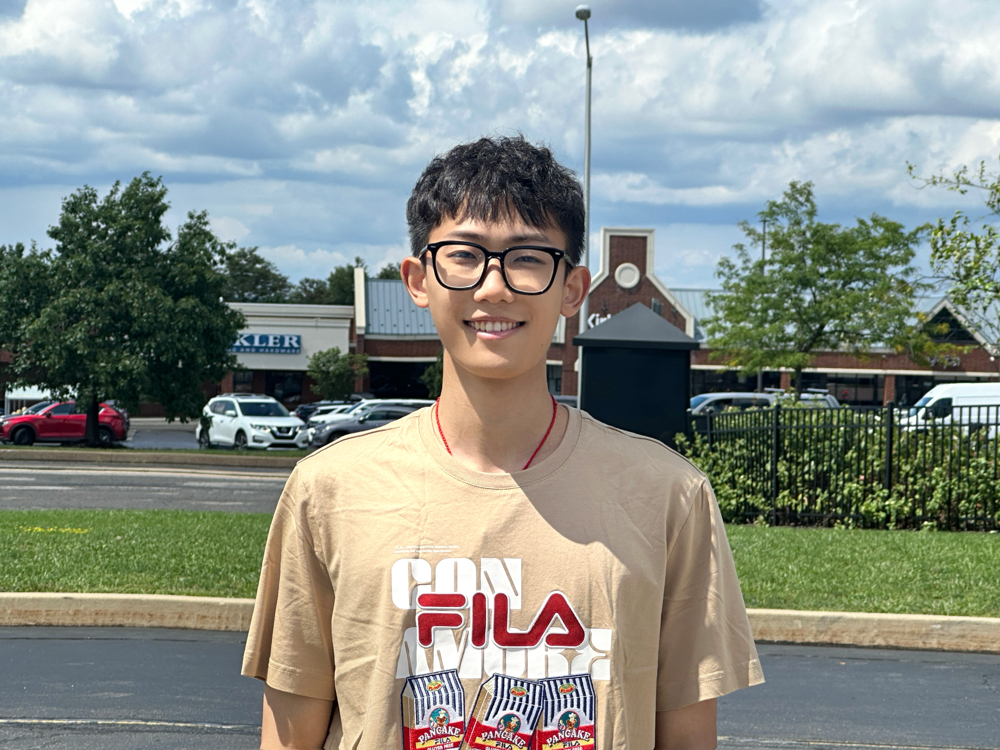

Xiang (Shawn) Fei.
PhD Student · M.S. Robotics, CMU '26
I am a PhD student at Carnegie Mellon University (CMU), advised by Prof. Sebastian Scherer at the AirLab. I earned my M.S. in Robotics at the CMU Robotics Institute, advised by Prof. Howie Choset at the Biorobotics Lab. Before CMU I received my B.Eng. in Computer Science from CUHK-Shenzhen, advised by Prof. Junhua Zhao.
My research aims at learned, robust, and generalizable spatial perception for robotics.
Outside research I enjoy basketball, hiking & touring, race cars, LEGO, PC games, and time with my fiancée Waiwai — see my Misc page.

Recent News
Selected Publications
Click any paper for the full write-up ↘
Selected Projects
Click any project for the full write-up ↘
Experience
Miscellaneous
Outside of research, I enjoy basketball, hiking & touring, race cars, LEGO, PC games, and — most of all — spending time with my fiancée Waiwai. A few moments along the way:
Fun Facts
You might notice this site lives at edgarfx.github.io — which has nothing to do with “Shawn.” Through undergrad my English name was Edgar, given to me by my IELTS teacher right after high school (borrowed from a character in a play). Since “Shawn” sounds close to my Chinese name Xiang, I switched to it after coming to the US for grad school.
My Chinese name is a homophone of the famous singer and actor Fei Xiang (费翔) — though my “Xiang” uses a different character “祥”, meaning auspiciousness and good fortune (吉祥). At gatherings my friends love asking me to sing his songs… the truth is, I don't know a single one.
{{ detail.title }}
{{ p.title }}
{{ p.pre }}{{ p.me }}{{ p.post }}
† Equal contribution
{{ pr.title }}
{{ pr.meta }}
{{ pr.summary }}
Details →{{ detail.authorsPre }}{{ detail.authorsMe }}{{ detail.authorsPost }}
† Equal contribution
{{ para }}